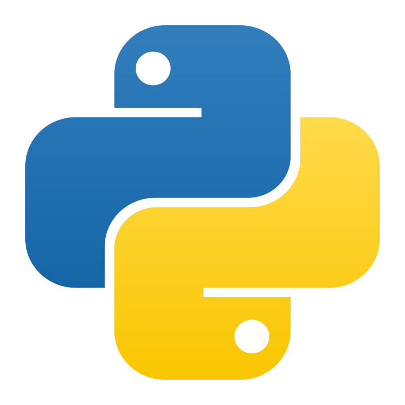

What is Claude.Bricks?
Claude.Bricks is two things at once. It is a system that generates modular LEGO buildings using Claude Code and PowerShell scripts that output LDraw (.ldr) files. It is also a working Azure ML platform that covers the Microsoft AI-300 (Operationalizing Machine Learning and Generative AI Solutions) exam objectives.
The project started as a DP-100 study lab and has been retooled for AI-300. The shift in emphasis is significant: AI-300 cares more about provisioning, versioning, promoting, evaluating, monitoring, and governing ML and GenAI systems than about building models from scratch.
The LEGO domain gives every scenario real data to work with. Images of rendered buildings feed the classifier. Structured .ldr files drive anomaly detection. Part-usage statistics power clustering. Natural language descriptions generate building specifications through a RAG pipeline. Four ML scenarios, all backed by Bicep provisioning, GitHub Actions CI/CD, and operational tooling (endpoints, evaluation, drift monitoring).
AI-300 Exam Domain Coverage
- AML workspace, datastores, compute targets provisioned via Bicep (16 modules)
- Data assets, environments, and components registered via SDK scripts
- Bicep + Azure CLI deployment automated through GitHub Actions
- Shared AML registry for cross-workspace asset promotion
- Git-managed source control for all infrastructure and ML code
- MLflow experiment tracking across 3 training scenarios
- Model registration with versioning and metadata
- Blue/green managed online endpoints with safe rollout and rollback
- Drift detection with PSI/KS metrics and automatic retraining triggers
- Training pipelines with metric-gated quality checks in CI/CD
- Foundry hub and project deployed via Bicep
- Foundation model deployment through Foundry model catalog
- Prompt versioning in Git with system prompts and RAG templates
- AI Search integration for retrieval-augmented generation
- Prompt variant comparison via experiment framework
- 15-row evaluation dataset with LEGO domain test cases
- Quality metrics: groundedness, relevance, coherence, fluency
- Custom buildability evaluator for domain-specific validation
- Automated eval workflow blocks deployment on threshold failure
- Safety evaluation for harmful content detection
- RAG tuning matrix (chunk size, overlap, search mode, top-k)
- Fine-tuning with synthetic data generation
- Embedding model selection and comparison
- Hybrid search combining vector, keyword, and semantic retrieval
- A/B testing framework with relevance metrics
End-to-End Pipeline
What This Document Covers
- Bicep-provisioned infrastructure (16 modules, dev/test environments)
- Five GitHub Actions CI/CD workflows (infra, training, deployment, evaluation, drift)
- Four ML scenarios with full operational lifecycle
- Foundry-native GenAI path with evaluation and monitoring
- Prompt versioning and A/B experiment framework
- Blue/green endpoint deployment with safe rollback
- Drift detection and automated retraining triggers
- Observability dashboards and KQL queries
- Cost analysis and teardown procedures
Table of Contents
2. Architecture Overview
3. Infrastructure as Code
All Azure resources are defined declaratively in code, reviewed in pull requests, and deployed through automation. The project maintains two IaC implementations: Bicep (primary) and Terraform (alternate).
Bicep (Primary Path)
The Bicep implementation lives in deploymentcode/bicep/ and follows a module-per-resource pattern. Each Azure resource type gets its own .bicep file under modules/, and a top-level main.bicep orchestrates them with conditional deployment flags.
Bicep Module Inventory
| # | Module | Resource | Purpose |
|---|---|---|---|
| 1 | storage-account.bicep | Blob containers for training data, models, images | |
| 2 | key-vault.bicep | Secrets, connection strings, API keys | |
| 3 | acr.bicep | Custom environment images | |
| 4 | log-analytics.bicep | Central logging and diagnostics | |
| 5 | app-insights.bicep | Endpoint telemetry, latency tracking | |
| 6 | ml-workspace.bicep | Core ML workspace (depends on 1-5) | |
| 7 | compute-cluster.bicep | CPU/GPU training clusters | |
| 8 | compute-instance.bicep | Dev VM for notebook work | |
| 9 | openai.bicep | GPT-4o-mini deployment (conditional) | |
| 10 | ai-search.bicep | Vector index for RAG (conditional) | |
| 11 | custom-vision.bicep | Training + prediction (conditional) | |
| 12 | foundry-hub.bicep | Foundry management layer (conditional) | |
| 13 | foundry-project.bicep | Scenario 4 Foundry workspace (conditional) | |
| 14 | aml-registry.bicep | Cross-workspace model promotion | |
| 15 | rbac.bicep | Role Assignments | Service principal and managed identity roles |
| 16 | diagnostics.bicep | Diagnostic Settings | Route resource logs to Log Analytics |
Deployment Command Flow
Wrapper scripts in scripts/deploy/ handle login, subscription selection, resource group creation, and deployment in one command. The flow follows a validate-preview-deploy pattern.
Scripts: scripts/deploy/deploy-infra.sh (bash), scripts/deploy/deploy-infra.ps1 (PowerShell), scripts/deploy/whatif.sh (preview only), scripts/deploy/teardown.sh (cleanup).
Module Dependency Chain
Terraform (Alternate Path)
A complete Terraform implementation exists in deploymentcode/terraform/ and an earlier version in tf/. It provisions the same resources as Bicep using HashiCorp Configuration Language. Both paths produce equivalent Azure environments.
Terraform remains in the repository for reference and for teams that prefer the HashiCorp ecosystem. The Bicep path is documented as primary because it integrates natively with Azure CLI and requires no external tooling beyond az.
Environment Strategy
Two resource groups separate dev and test workloads. Parameter files in deploymentcode/bicep/parameters/ control what differs between environments.
| Parameter | Dev (rg-claudebricks-dev) | Test (rg-claudebricks-test) |
|---|---|---|
Standard_DS3_v2 (low cost) | Standard_DS3_v2 | |
| 0 | 0 | |
| 2 | 4 | |
| Enabled | Enabled | |
| Enabled | Enabled | |
| Enabled | Disabled (cost savings) | |
| Enabled | Enabled | |
| LRS | LRS | |
| 7 days | 90 days | |
| Diagnostic logging | Minimal | Full |
The CI/CD pipeline deploys to dev first, waits for manual approval, then deploys to test with the production-like parameter set.
4. CI/CD with GitHub Actions
Five GitHub Actions workflows automate the full lifecycle: infrastructure provisioning, model training, model deployment, GenAI evaluation, and drift detection. All workflows authenticate via OIDC federated credentials (no stored secrets).
Lint, validate, and deploy Bicep templates to dev and test environments with a manual approval gate between them.
deploymentcode/bicep/**Auth: OIDC federated credential
Steps:
- Bicep lint (
az bicep build) - Validate (
az deployment group validate) - What-if preview
- Deploy to dev
- Manual approval gate
- Deploy to test
Submit an AML training job, wait for completion, pull metrics, and register the model if quality thresholds are met.
Steps:
- Submit AML training job via SDK
- Wait for job completion
- Pull MLflow metrics
- Gate on threshold (accuracy >= 0.85)
- Register model if passing
Deploy a registered model as a canary, run smoke tests, shift traffic progressively, and promote or rollback based on health checks.
Steps:
- Deploy as canary (0% traffic)
- Smoke test the new deployment
- Shift 10% traffic
- Health check window (5 min)
- Promote to 100% or rollback
Run evaluation datasets against the RAG pipeline, score quality metrics, and block deployment if thresholds are not met.
prompts/** or eval/**Metrics: groundedness, relevance, coherence, fluency
Steps:
- Load eval dataset from
eval/datasets/ - Run against deployed model
- Score quality metrics
- Compare against thresholds
- Block if any metric fails
Run a weekly scheduled check on input data distributions. If drift exceeds the PSI threshold, trigger the training pipeline automatically.
Metric: Population Stability Index (PSI)
Steps:
- Submit drift detection AML job
- Check PSI against threshold
- Trigger retrain via repository dispatch if needed
5. Asset Registration and Management
After Bicep provisions the infrastructure, Python scripts register ML-specific assets into the workspace. This is a four-layer approach that separates infrastructure provisioning from ML asset management.
storage, compute, KV
environments via SDK
as versioned components
AML registry
Registration Scripts
| Script | Layer | What It Registers |
|---|---|---|
 register_data_assets.py | 2 | 4 data assets: facade-images:1 (uri_folder), ldr-files:1 (uri_folder), ldr-validation-features:1 (uri_file), reference-models:1 (uri_folder) |
register_envs.py | 2 | 2 environments: claudebricks-sklearn:1 (scikit-learn, Pillow, MLflow), claudebricks-clustering:1 (scikit-learn, UMAP, HDBSCAN, MLflow) |
register_components.py | 3 | 3 components: extract-features, run-clustering, evaluate-model (reusable pipeline steps with defined inputs/outputs) |
publish_to_registry.py | 4 | Copies selected assets (models, environments, components) from the workspace to the shared AML registry for cross-workspace use |
Shared AML Registry
The AML registry (claudebricks-registry) provides a central catalog that both dev and test workspaces can pull from. Models registered in dev can be promoted to the registry, then consumed by test without retraining. The same applies to environments and components.
This enables a clean promotion path: train in dev, validate in dev, publish to registry, consume in test, deploy to production endpoints.
6. Scenario 1: Facade Style Classification
Image Classification Pipeline
Train a Random Forest classifier on facade images to categorize architectural styles (historic, modern, industrial, commercial, residential). Deployed as a managed online endpoint with blue/green deployment capability.
Create data asset
cpu-cluster
RandomForestClassifier
MLflow autolog metrics
MLflow model type
DS3_v2, key auth
style label
Blue/Green Deployment
Scenario 1 is the primary demonstration of safe deployment. The endpoint supports two named deployments (blue and green) with traffic splitting controlled by percentage.
0% traffic
prediction confidence
progressive rollout
rollback_deployment.py reverts to blue at 100%Drift monitoring runs weekly on this scenario via the drift-check.yml workflow. If the Population Stability Index (PSI) exceeds the threshold, a retraining job is triggered automatically.
Scripts
| Script | Purpose |
|---|---|
prepare_data.py | Upload facade images to blob, create versioned data asset |
train.py | Training logic (runs on cluster): load images, train RandomForest, MLflow autolog |
train_job.py | Submit training as AML command job |
register_model.py | Register best model from experiment run |
deploy_endpoint.py | Create endpoint and initial "blue" deployment (100% traffic) |
deploy_canary.py | Deploy new model version as "green" (0% traffic) |
promote_deployment.py | Shift traffic percentage to new deployment |
rollback_deployment.py | Revert all traffic to previous deployment |
smoke_test.py | Validate endpoint health (latency, accuracy, schema) |
score.py | Client-side scoring example |
Azure Resources Consumed by Scenario 1
| Resource | Created By | Purpose |
|---|---|---|
Blob container facade-images | Bicep | Training image storage |
Datastore facade_images | register_data_assets.py | ML workspace pointer to blob |
Data asset facade-images:1 | prepare_data.py | Versioned uri_folder reference |
Environment claudebricks-sklearn:1 | register_envs.py | Training runtime |
| CPU/GPU Cluster | Bicep | Training compute |
| MLflow experiment | Auto-created | Metric and artifact tracking |
Registered model facade-classifier:1 | register_model.py | Best trained model |
Managed endpoint facade-classifier-endpoint | deploy_endpoint.py | Real-time inference (DS3_v2) |
7. Scenario 2: Structural Validation (Anomaly Detection)
Anomaly Detection on LDraw Files
Parse .ldr files into numeric features, then use Isolation Forest or Random Forest to flag structurally unsafe LEGO builds. Deployed as a managed endpoint for real-time validation.
pass/fail labeled
Collision Count
Height-to-Base • Layer Density
ldr-validation-features:1
or RandomForest (supervised)
MLflow autolog
"collision_count": 2, "height_to_base_ratio": 4.5,
"layer_density": 0.8 }
→ { "prediction": "pass" }
Operational Lifecycle
The same blue/green deployment pattern from Scenario 1 applies here. When the model is retrained on new labeled .ldr files, a canary deployment is created and validated before traffic is shifted.
Feature engineering is the critical first step. The 4 numeric features (overhang ratio, collision count, height-to-base ratio, layer density) are derived from parsing the LDraw line format. This parsing logic lives in feature_engineering.py and must handle the full range of LDraw part types.
Azure Resources Consumed by Scenario 2
| Resource | Created By | Purpose |
|---|---|---|
Blob container ldr-files | Bicep | Raw .ldr file storage |
Datastore ldr_files | register_data_assets.py | ML workspace pointer to blob |
Data asset ldr-validation-features:1 | feature_engineering.py | Extracted numeric features (uri_file) |
Environment claudebricks-sklearn:1 | register_envs.py | Training runtime |
| CPU Cluster | Bicep | Training compute |
| MLflow experiment | Auto-created | Metric and artifact tracking |
Registered model ldr-validator:1 | register_model.py | Anomaly detection model |
Managed endpoint ldr-validator-endpoint | deploy_endpoint.py | Real-time inference (DS3_v2) |
8. Scenario 3: Pattern Extraction (Clustering)
Multi-Step Pipeline: Extract, Cluster, Analyze
Discover common building patterns across reference .ldr models using part-usage statistics and clustering (KMeans/HDBSCAN). This is a batch pipeline with no real-time endpoint. The pipeline is defined using the @dsl.pipeline decorator for component-based orchestration.
Dimensions, roof type, window ratio
Output: stats CSV
KMeans or HDBSCAN
MLflow log cluster labels
Cluster labels + centroids
Component-Based Pipeline
Unlike Scenarios 1 and 2 (which use single command jobs), Scenario 3 uses the @dsl.pipeline decorator to define a multi-step pipeline. Each step is a registered component with typed inputs and outputs. This means Step 1's output (the features CSV) is automatically passed to Step 2 as input.
The pipeline is submitted via pipeline_job.py, which defines the step graph and submits it to AML. Both steps run on the same compute cluster but could be configured to use different compute targets if needed.
Because this is a batch analysis (no real-time scoring), there is no managed endpoint. Results are stored as MLflow artifacts and the clustering model is registered for later use (for example, to classify new reference models into discovered pattern groups).
Azure Resources Consumed by Scenario 3
| Resource | Created By | Purpose |
|---|---|---|
Blob container reference-models | Bicep | Reference .ldr file storage |
reference_models | register_data_assets.py | ML workspace pointer to blob |
reference-models:1 | extract_stats.py | Input data (uri_folder) |
claudebricks-clustering:1 | register_envs.py | Training runtime (sklearn, hdbscan) |
| Bicep | Pipeline compute | |
scenario3-pattern-extraction | pipeline_job.py | 2-step extract + cluster pipeline |
| Auto-created | Metric and artifact tracking | |
clustering-model:1 | train.py | Cluster labels + centroids |
9. Scenario 4: GenAI Spec Generator
This scenario generates LEGO building specifications from natural language descriptions. It combines retrieval-augmented generation (RAG) with optional fine-tuning. There are two implementation paths: the original Azure OpenAI + Prompt Flow approach, and a Foundry-native path that aligns with AI-300 GenAIOps objectives.
Path A: Azure OpenAI + Prompt Flow
The original implementation. Uses Azure OpenAI directly with Prompt Flow for orchestration. Good for understanding the underlying mechanics.
Prompt Flow: flow.dag.yaml, retrieve.py, generate.py
Path B: Foundry-Native AI-300
The AI-300 aligned approach. Uses Foundry hub/project for model deployment, evaluation, monitoring, and tracing.
Resources Consumed
| Resource | Purpose |
|---|---|
![OpenAI]() Azure OpenAI Azure OpenAI | GPT-4o for generation, text-embedding-3-small for vectorization |
![Search]() AI Search AI Search | Vector + hybrid search index for RAG retrieval |
![ML]() Foundry Hub + Project Foundry Hub + Project | GenAI operations, evaluation, monitoring (Path B) |
![SA]() Storage Account Storage Account | Training data, inference logs |
![AppInsights]() App Insights App Insights | Telemetry, tracing, latency metrics |
10. Endpoint Operations
Managed online endpoints serve trained models for real-time inference. Claude.Bricks uses blue/green deployment for safe rollout. The pattern applies to any scenario, but Scenario 1 (facade classification) is the primary demonstration.
Blue/Green Architecture
100% traffic
0% traffic
Deployment Flow
Smoke Test Criteria
| Check | Threshold |
|---|---|
| Response latency (p95) | < 2 seconds |
| HTTP 200 success rate | > 99% |
| Response schema | Contains expected fields (prediction, confidence) |
| Prediction confidence | Above scenario-specific threshold |
Rollback triggers: latency spike above 2x baseline, error rate exceeds 1%, accuracy regression on validation set, or manual operator decision. See runbooks/endpoint-deployment.md for the full operational playbook.
11. Evaluation and Quality Gates
Every change to prompts, evaluation datasets, or Scenario 4 code triggers an automated evaluation run through the eval-rag.yml GitHub Actions workflow. Deployment is blocked if quality metrics fall below defined thresholds.
Evaluation Dataset
15 test cases in eval/datasets/lego-spec-generator.jsonl.
- Building types: bakery, hotel, townhouse, fire station, cinema, pub, library, canal house, and more
- Styles: Victorian, Art Deco, Modern, Georgian, Parisian, Tudor, Japanese, Brutalist
- Difficulty: 5 easy, 5 medium, 5 hard
- Per row: prompt, expected traits, golden keywords, known bad patterns
Custom Buildability Evaluator
Domain-specific validator (eval/evaluators/buildability.py) that ties evaluation back to the LEGO domain.
- Output includes physical dimensions (width, depth, height)?
- References plausible brick/part names?
- Specifies a color palette?
- Structural elements physically possible?
- Output follows expected section format?
Score: 0.0 to 1.0 based on checks passed.
Quality Metrics and Thresholds
Minimum scores required to pass the evaluation gate. Deployment is blocked if any metric falls below its threshold.
Evaluation Scripts
| Script | Purpose |
|---|---|
eval/run_evaluation.py | Main evaluation runner. Scores all test cases against deployed model. |
eval/run_prompt_experiment.py | A/B testing across prompt variant combinations (system x RAG matrix). |
eval/run_rag_tuning.py | RAG configuration optimization (chunk size, overlap, search mode, top-k). |
12. Prompt Engineering
All prompts are versioned in Git under the prompts/ directory. Changes to prompts trigger the evaluation workflow automatically, so regressions are caught before deployment.
Prompt Directory Structure
system/v1.txt # baseline system prompt
system/v2.txt # structured output format
rag/v1.jinja2 # simple context template
rag/v2.jinja2 # grounding rules + citations
few-shot/v1.jsonl # example set A
few-shot/v2.jsonl # example set B
CHANGELOG.md # version history with rationale
System Prompt v1
Free-form instructions. Asks the model to generate detailed LEGO building specifications covering dimensions, colors, architectural features, and construction notes. No enforced output structure.
System Prompt v2
Adds mandatory output sections: Dimensions, Color Palette, Architectural Features, Floor Plans, Construction Notes, Structural Validation. Includes explicit grounding instructions to base recommendations on retrieved reference materials.
RAG Template v1
Simple context concatenation. Appends retrieved reference materials before the user query. No explicit grounding rules.
RAG Template v2
Adds numbered references with relevance scores, five explicit grounding rules, inline citation requirements, and prompt version metadata for traceability.
Experiment Framework
eval/run_prompt_experiment.py creates a matrix of all system prompt x RAG template combinations. For each combination, it runs the full evaluation dataset and measures quality metrics, token usage, latency, and estimated cost. The output identifies the best-performing combination by weighted composite score.
Example: 2 system prompts x 2 RAG templates = 4 combinations, each evaluated against 15 test cases = 60 evaluation runs.
13. Observability and Monitoring
The observability stack tracks both classical ML and GenAI workloads. Application Insights handles telemetry collection, Log Analytics stores structured queries, and custom scripts detect drift and trend failure modes.
Telemetry Client
deploymentcode/scripts/common/telemetry.py wraps the Application Insights SDK. Every GenAI request automatically captures prompt version, model version, and trace ID. The wrapper keeps instrumentation out of business logic.
Core Functions:
track_requestlogs inbound request with latency, status, custom dimensionstrack_dependencylogs outbound calls (LLM, AI Search, storage)track_metriclogs numeric values (tokens, cost, eval scores)track_exceptionlogs errors with full stack trace and context
Drift Detection
For Scenario 1 (facade classification). Compares current inference distributions against a training-time baseline using statistical tests.
PSI Threshold Zones
Critical threshold triggers automatic retraining via the drift-check.yml GitHub Actions workflow.
KQL Dashboard Queries
| File | Purpose |
|---|---|
avg-latency-by-prompt.kql | Avg/p50/p95/p99 latency by prompt version |
token-cost-by-day.kql | Daily token consumption and estimated USD cost |
groundedness-pass-rate.kql | Quality metric pass rates by day |
error-rate-trend.kql | Error rate by exception type |
top-failure-modes.kql | Top 10 failure categories by frequency |
Failure Trending
monitoring/feedback/trend_failures.py reads evaluation results and categorizes failures across 12 categories: missing dimensions, invalid parts, structural issues, grounding failure, hallucinated references, incomplete specs, wrong color codes, orientation errors, scale mismatches, missing submodels, token limit overruns, and prompt ambiguity. Weekly aggregation feeds into prompt iteration priorities. The most frequent failure category in a given week becomes the top target for the next prompt revision cycle.
14. Data Flow Overview
Five distinct data paths move through the platform. Each path has different latency expectations and storage targets.
15. Cost Breakdown
Estimated monthly costs for a single dev environment with moderate usage. All prices are approximate and based on East US 2 region pricing as of early 2026.
Fixed Monthly (Dev)
Variable Costs
Total Estimate
~$120-240/month for dev with moderate use
16. Teardown
Removing all deployed resources. Both IaC tools support full teardown.
Primary (Bicep)
Alternate (Terraform)
What Happens on Teardown
- Key Vault enters soft-deleted state (recoverable for 90 days by default). Purge manually if you need the name back immediately.
- OpenAI deployments are deleted with the resource group. Model deployments do not persist independently.
- AI Search indexes are not recoverable. Re-index from source data after redeployment.
- Storage data is lost unless backed up externally. The teardown script does not create snapshots.
- MLflow experiments and run history are stored in the workspace. Deleting the workspace deletes all experiment data.
17. How Models Work Together
The four ML scenarios connect to the LEGO design workflow through managed endpoints. Each endpoint serves a specific role in the feedback loop between design and validation.
Integration Points
| Endpoint | Scenario | What It Does |
|---|---|---|
facade-classifier-endpoint | 1 | Classifies building style from rendered image |
structural-validator-endpoint | 2 | Flags anomalous structural patterns |
pattern-extractor-endpoint | 3 | Identifies building cluster from part usage |
spec-generator-endpoint | 4 | Generates building spec from natural language |
Configuration
Endpoint URLs and keys are stored in .env for local development and Key Vault for deployed environments. For production, use managed identity to avoid storing keys entirely. The SDK authenticates via DefaultAzureCredential, which picks up the managed identity automatically.
Current Status
| Capability | Status |
|---|---|
| Bicep infrastructure deployment | Operational |
| GitHub Actions CI/CD | Operational |
| Scenario 1-3 training scripts | Operational |
| Scenario 4 RAG pipeline | Operational |
| Foundry-native GenAI path | Operational |
| Managed online endpoints | Operational |
| Evaluation quality gates | Operational |
| Prompt versioning | Operational |
| Drift detection | Operational |
| Observability dashboard | Operational |
| LEGO design integration | In Progress |
| Production data collection | Planned |